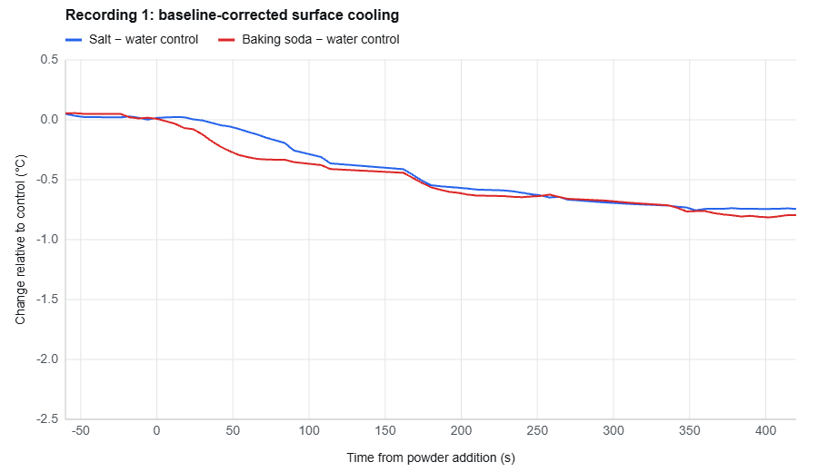
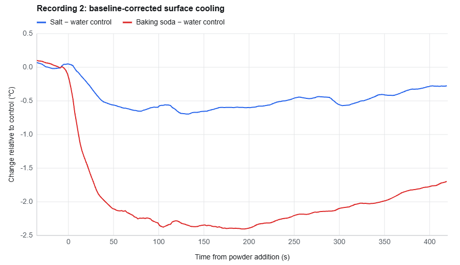
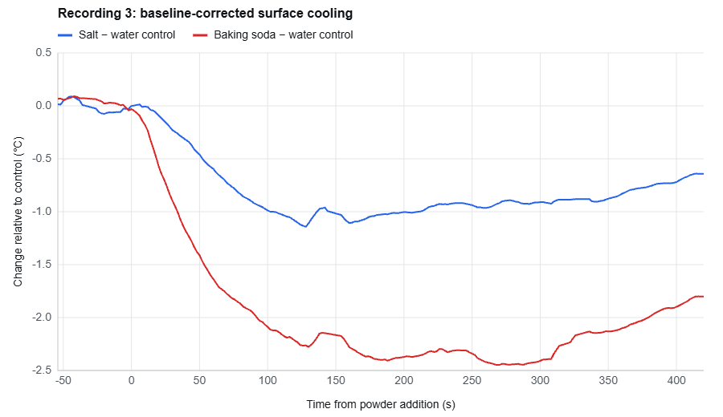

Can AI be a good lab partner?
A student asks a question. An AI agent chooses the materials, designs the experiment, reads the thermal recordings, says what to change next, and writes the lab report.
Most school experiments begin with a lab manual. Someone has already decided what to mix, what to measure, and what the answer should be. The manual leaves out the parts of science that take scientists the most time: deciding what to test and what to test it with, finding out why a result did not match the prediction and what to change in the next attempt, and writing down what the data show and what they do not. A good lab partner helps with all these tasks.
The Experiments section of Infrared Explorer gives this role to an AI agent. A student starts with a question. The materials do not have to be named: the student can ask what could be done with things found in a kitchen or around the house, and the agent says which ones to use. The student can also put items on a table and share a photo of them, and the agent decides what to do with them. Either way, the agent turns the question into a claim that can be tested and designs an experiment to test it.
The student then does the experiment by hand and records it with a thermal camera. The agent reads the temperature data in the recording, discusses the result, and says what to change next. From the discussion, there are two ways back. The short way is to record the same design again with the problems fixed, to improve the quality of the data. The long way is to go back to the plan for a different design that tests the same claim, to cross-validate the result. The student and the agent can go around either loop as many times as the claim needs, and at the end, the agent writes a lab report. The agent never touches the bench: all it knows about the experiment comes through the camera and the conversation.
As an example, this article follows one experiment from the first question to the final report. We kept the start simple: a photo of salt, baking soda, and three dishes from a kitchen. The experiment has been twice around the small loop: three recordings of the same design, with the first result contradicting the agent's prediction. For the big loop, the agent has proposed different designs, which we leave for readers to try. The agent ran on OpenAI's GPT-6 Luna. The window below is the experiment as we left it, with the whole conversation.
The experiment on the web. Scroll the conversation on the left, and open Plan, Captures, or Report on the right.
From a question to a plan
We put a mug, a canister of table salt, a box of baking soda, and three glass Petri dishes on a table, took a photo of them in the app (Figure 1), and typed one sentence:
What experiment can I do using these materials?
The agent named the experiment “Cooling When Powders Dissolve” (a slightly misleading name, given that table salt is granular, not a powder), drew the setup (Figure 2), and wrote a plan in three parts: question and prediction, setup, and recording. Every item in the photo got a job: a dish of plain water as the control, a dish each for the salt/water mixture and the baking soda/water mixture, and the mug to pour the water.


The agent's plan turned our open question into a claim that can be tested: salt and baking soda both take in heat as they dissolve, so both cool the water, baking soda probably more than salt. For this setup, the claim became a prediction with numbers in it: both of their dishes should cool, by a few tenths of a degree Celsius for salt and by perhaps 0.5 to 1.5 °C for baking soda. It also said what would count as a failed prediction: all three dishes exhibiting similar temperature changes, or the baking soda and salt dishes warming. The plan named a weakness in its own design before we did: equal spoonfuls are not equal masses.
The first recording: a tie
We filled the three dishes with water, pointed a FLIR ONE Edge Pro straight down at them, and recorded for nearly 40 minutes in the app's time-lapse mode. We marked a reading area on the surface of the liquid in each dish (T1, T2, and T3 in Figure 3). About 100 seconds in, we put a scoop of salt into the middle dish and an equal scoop of baking soda into the bottom dish. The plan said to stir each for 10 seconds, but we did not stir.


Figure 3: The first recording at 105 seconds in, seen in visible light (left) and infrared light (right). Top to bottom: plain water, water with salt, water with baking soda. The baking soda lies in a white heap on the bottom of its dish. The colors run from 18.2 °C (dark pink/purple) to 23.2 °C (white).
When the recording was added to the experiment, the agent went to work. It called up thermal and visible-light frames of its choosing, and it wrote and ran its own code to read the temperature inside the three reading areas. It worked out for itself which dish was the control, which had the salt, which had the baking soda, and when the two materials were added.
The agent also dealt with a problem in the data that we had not mentioned. A thermal camera closes its shutter from time to time to recalibrate, and ours did so 44 times during the recording. Each time, every reading in the frame dipped briefly by about 1 °C before coming back. The agent traced the dips to the recalibrations and left out the frames around each one. It also compared the three dishes with each other by subtracting the readings from the control (the plain-water dish) from the salt and baking soda dishes at each point in time. Figure 4 is the chart it drew.

All three water surfaces started at about 19.8 °C. Between 5 and 15 minutes, the salt dish read about 0.8 °C below the plain-water control and the baking soda dish about 0.7 °C below the control, and by the end, both had crept back to about 0.2 °C below. It was a tie between salt and baking soda, and the agent said plainly what that meant: the result did not support its own prediction that the dish with baking soda would cool more than the one with salt.
The first recording, with a chart of the salt and baking soda dishes' temperatures relative to the control. Press Play, or move a thermometer.
What the agent would change
The analysis had one thing wrong: the agent assumed that we had followed its plan, writing that the salt and the baking soda were “added and stirred.” We told it that nothing had been stirred, and it took the correction, stating, “I misread the setup.”
Then, the agent corrected us. When we asked why there was no difference in cooling between the salt and baking soda dishes, it answered, “There is a small difference in your capture,” and called it “a weak result, not a clear demonstration that salt cools more.” It looked up the chemistry and cited its source: mole for mole and fully dissolved, baking soda should cool the water more than salt.
The agent did not stop at explaining the tie. Its analysis had already said that a repeat should have equal amounts of the two solids and every dish should be stirred equally. When we asked what would make the difference in cooling between salt and baking soda more noticeable, it described a repeat of the same design, done with more care: weigh the two solids instead of measuring them by the scoop, 8 g of each in 100 mL of water (which is a ratio at which the baking soda can fully dissolve in the water); stir each dish the same way for the same time; and set the dishes on insulating pads. Only the stirring had been in the agent's first plan. This is the small loop of the workflow: the claim and the design stay as they are, and what changes is the quality of the data. The full exchange can be found near the top of this article.
The second recording: stirring
We recorded the same design again, with the same three dishes and the same scoops of salt and baking soda, as another time-lapse, this time for 10 minutes. Of the agent's changes, we made only one: after the salt and the baking soda were added, we stirred those two dishes with sticks. We left the control alone (see Figure 5 below).

Again, the agent looked before it measured. In the visible-light frames, it saw the stirring sticks in the two dishes. It also caught that, before anything was added, the baking soda dish already read about 0.5 °C warmer than the control. Left alone, that offset would have hidden half a degree of cooling, so it measured each dish from its own starting temperature before comparing it with the control.
This time, the temperatures in the salt and baking soda dishes pulled apart within a minute. Between two and five minutes after the salt and the baking soda were added, the baking soda dish stayed about 2.3 °C below the plain-water control and the salt dish about 0.6 °C below. The baking soda dish did cool more than the salt dish, and by more than the predicted 0.5 to 1.5 °C. The agent still did not call the claim settled: one recording alone cannot show that the difference is repeatable, it said.
The second recording, with the same chart. Press Play to watch the baking soda dish at the bottom turn cold within a minute of the stirring.
The third recording: equal masses
The second recording still compared a scoop with a scoop, and the plan had said from the start that equal spoonfuls are not equal masses. We went around the small loop once more and made another of the agent's changes: we measured the amounts. Each dish held 30 mL of water, and the middle and bottom dishes got 2 g of salt and 2 g of baking soda, both stirred. The control was again left alone.
The agent measured the third recording the way it had measured the second: each dish from its own starting temperature, then against the control. The baking soda dish again cooled more. Between three and five minutes after the solids were added, it read about 2.4 °C below the control, and the salt dish about 1.0 °C below. The agent called this the clearest comparison so far, because the masses and the water volumes were equal, and noted that it agrees with the second recording. It also kept the limits in view: this is still a single recording, and equal masses are not equal numbers of moles.
The third recording, with the same chart: 30 mL of water in each dish, with 2 g of salt in the middle one and 2 g of baking soda in the bottom one.
The report
When we asked for a report, the agent went back to all three recordings, computed them again with one method, and checked the numbers before it wrote anything. The report has a part for each recording (it calls them rounds), each with a thermal frame that shows where the temperatures were read and a chart on the same axes (Figure 6). A table then puts the three side by side.



Figure 6: The three charts in the report, on the same axes: each dish's change from its own starting temperature, minus the control's change, against seconds elapsed since the salt and the baking soda were added. The first recording had no stirring; the second had stirring; the third had stirring and equal masses.
The report kept the claim to what the recordings can carry. All three show the dishes with salt and baking soda cooling relative to the control, and the two stirred recordings show the baking soda dish cooling more. On why the first recording differs, it did not claim that the stirring was the cause, only that it could be: the recordings also started at different temperatures, and the amounts in the first two were never measured. Its last sentence asks for the small loop again, a repeat of the third recording, to find out whether the larger drop for baking soda is reproducible.
Different designs for the same claim
A repeat can show that a result is reliable. It cannot show that the result means what we think it means, because all three recordings share one design and its blind spots. So we asked for the other loop:
Generate different experimental designs to prove the science.
The agent began with the word “prove”: no single experiment proves a mechanism, it said, but agreement across different tests makes the evidence much stronger. Then it gave three designs and said what each would test:
- The same comparison with tighter controls. The same amounts, with the control stirred too, both solids added at the same moment, and the whole trial repeated a few times with the dishes swapping places. This tests whether the larger cooling for baking soda is reliable, and not an effect of the stirring or of where a dish sits.
- More baking soda, more cooling? A row of dishes with the same amount of water and increasing amounts of baking soda, from none to 2 g, all small enough to dissolve fully. If the cooling grows with the amount dissolved, that ties the cooling to the dissolving.
- A thermometer in the liquid. The salt and baking soda comparison in insulated cups, read with a thermometer probe. This tests whether the cooling the camera sees at the surface is also there in the bulk of the liquid.
In the terms of the diagram, the first design is the small loop again, and it closes a gap in the agent's own first plan, which left the control unstirred. The second and the third are the big loop: different designs for the same claim. The agent's advice was to run the first, and then use the third as an independent check on the temperature. We leave these experiments for readers to try on their own.
What the agent missed
The plainest clue to why the first recording ended in a tie is in Figure 3, and the agent never mentioned it. Specifically, the baking soda lies in a white heap on the bottom of its dish. The agent had, in fact, called up that frame. It gave the general reason that a solid left unstirred may dissolve slowly, but it did not point to the heap of undissolved baking soda.
The chemistry is why the heap matters. Pulling ions out of baking soda or salt costs energy, and water molecules pay part of it back as they gather around each freed ion. For both salt and baking soda, the cost is larger than the payback, and the water makes up the difference by cooling. Per the information the agent looked up, baking soda takes about three times as much heat per gram as salt. But only what dissolves takes any heat, and baking soda is about a quarter as soluble as salt. A heap of baking soda in still water sits in a thin layer that is nearly saturated. The camera also reads only the top skin of the water. Stirring brought fresh water to the powder (without fully dissolving it) and brought the cold water up to the surface where the camera could read it.
While the agent did read the data critically, we also had to be critical of the agent.
Conclusion
This article uses salt and baking soda to illustrate a new way to learn science in the real world: students ask an AI agent a question, the agent turns it into a claim and designs an experiment with materials that are easy to find, and the students do it with their own hands. The agent reads the thermal recording and hands back measured data, an argument, and what to do next: the same design again for better data, or a different design to cross-validate the result. At the end, it writes the report. Was it a good lab partner? In this experiment, it was. It turned a question into a claim and a prediction that could fail, held to the data when we overstated the result, gave way when we knew our own procedure better, and answered a request for proof with three ways to check its own result. Its work still had to be checked, like the work of any lab partner.
A thermal camera gives students thousands of thermometers where they once had one, a step from sensing to imaging. An AI agent that can read what those thermometers record takes the next step, from imaging to reasoning. By pairing the two, Infrared Explorer turns students' curiosity about ordinary things into genuine scientific investigations, wrong turns included.
← Back to Infrared Explorer